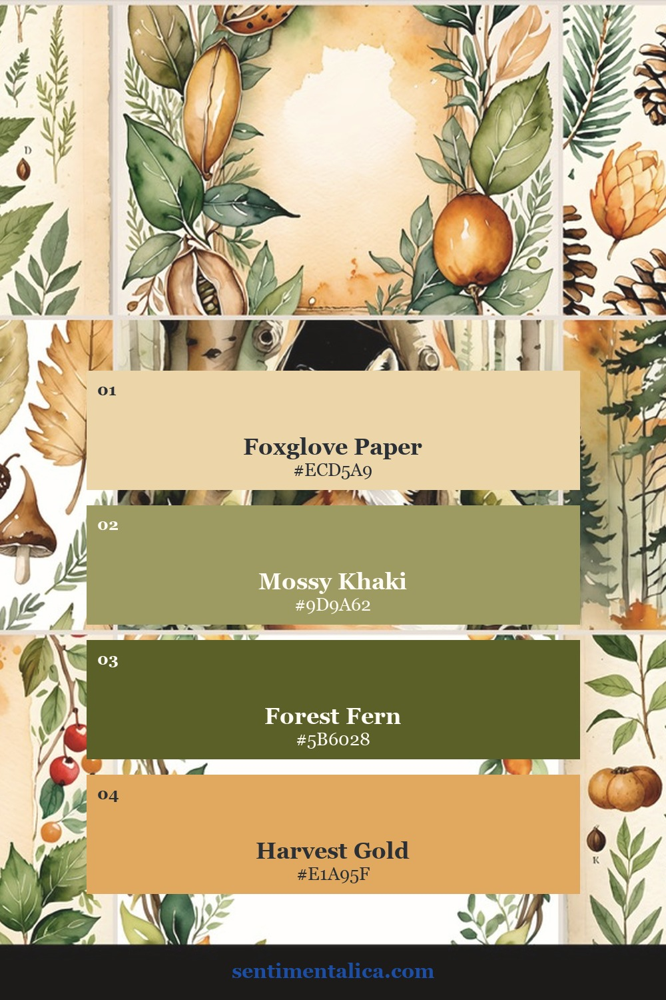
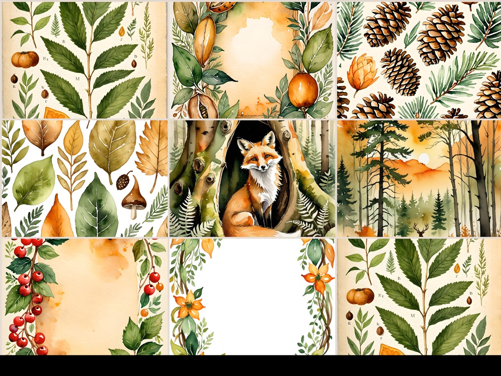
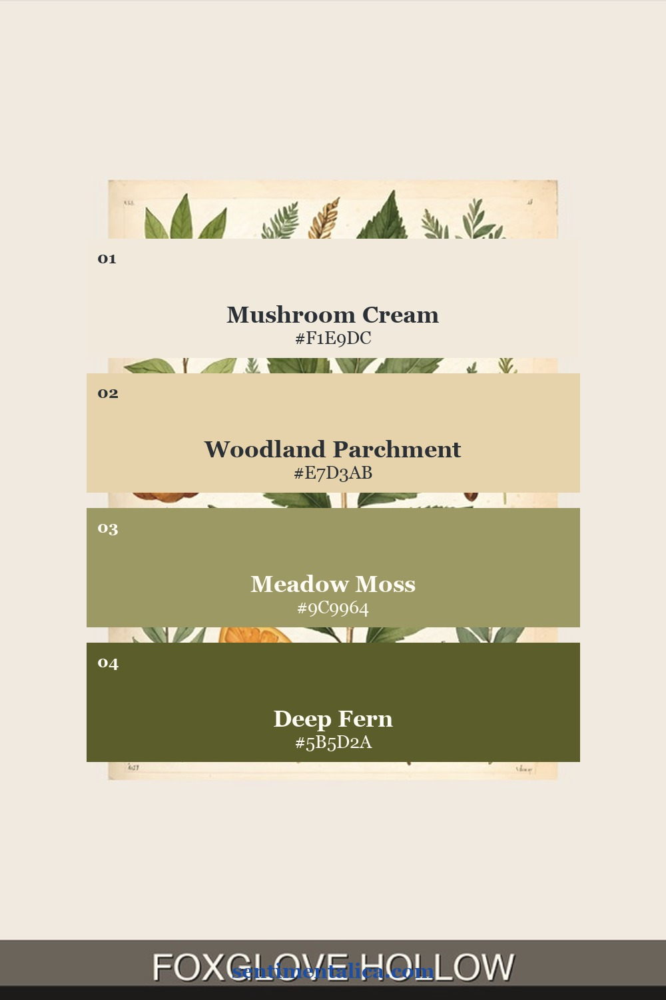
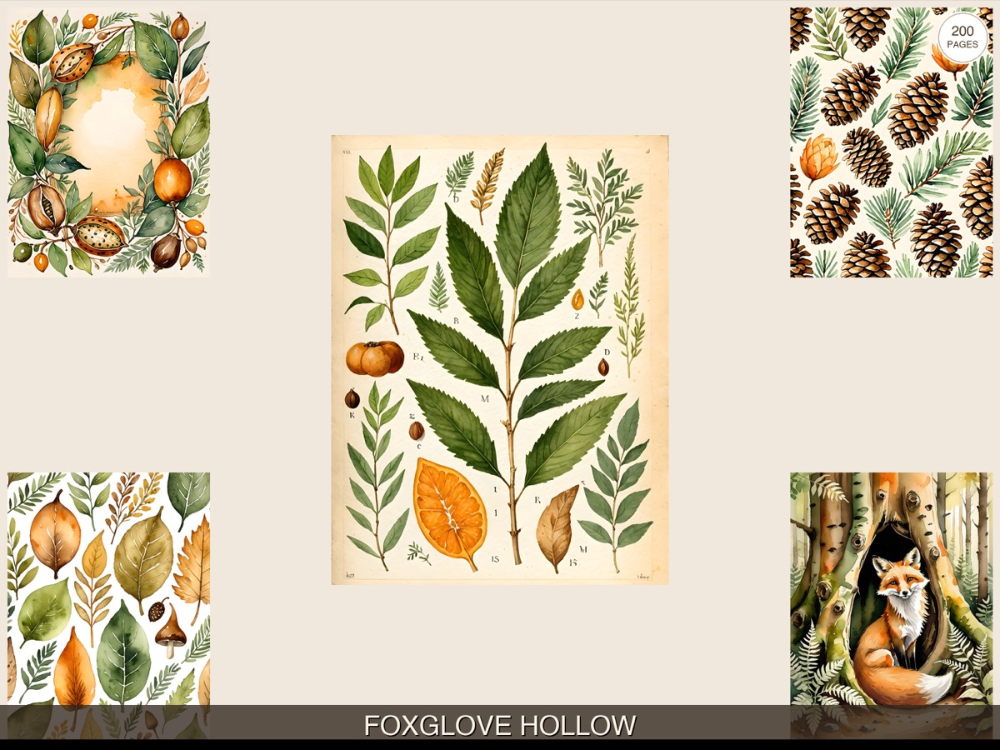
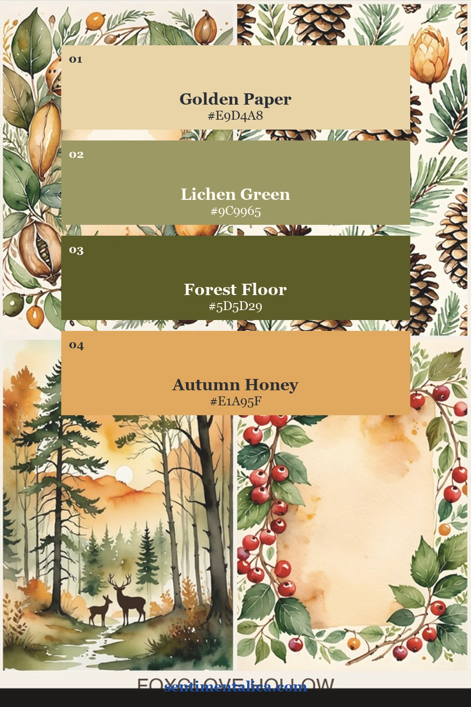
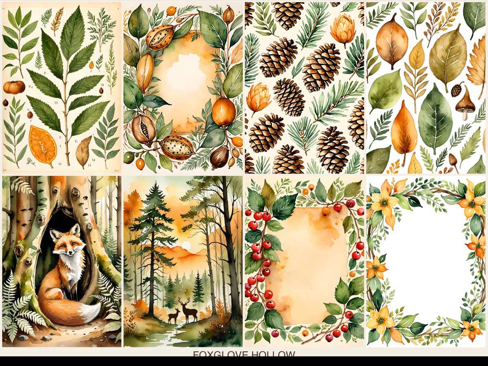

An autumn woodland journal does not have to rely on pumpkin orange. Moss, faded fern, mushroom cream, honeyed paper, and a controlled touch of harvest gold create a quieter palette that can move from late summer through the whole cozy season. The Foxglove Hollow printable image pack brings those colors together with woodland imagery and aged-paper detail.
Each palette below comes from a different real listing composition. That means the swatches are not generic seasonal guesses—they are practical color maps for using the collection itself.
Palette one: foxglove paper and forest fern

Use Foxglove Paper as the open, light foundation. Mossy Khaki works as the main supporting color, while Forest Fern defines pockets, labels, and focal edges. Save Harvest Gold for the smallest pieces. This balance feels autumnal without becoming loud, and it pairs naturally with kraft paper, linen thread, and botanical stamps.

Palette two: the mushroom path

This is the calmest palette of the three. Mushroom Cream and Woodland Parchment keep the page airy; Meadow Moss adds age and softness; Deep Fern becomes the visual punctuation. Try it for field-note pages, mushroom pockets, forest walks, and spreads where you want plenty of room to write.
If the page begins to look flat, add contrast with shape instead of another color: a circular seal, a tall tag, a narrow torn strip, or one strong dark silhouette.

Palette three: autumn honey and lichen

Choose this combination for a warmer cozy-season page. Golden Paper leads, Lichen Green bridges the lights and darks, and Forest Floor adds depth. Use Autumn Honey in just a few memorable places—a label, tiny flower center, tab, or stitched line. Because the yellow is muted, it glows without fighting the woodland greens.

The 60–30–10 woodland formula
Start with about 60% pale paper, 30% combined moss and fern, and 10% warm gold. Within that final 10%, leave some space for natural brown from kraft paper, ink, or distressed edges. This keeps the palette earthy and gives the illustrated details room to breathe.
The Foxglove Hollow pages already contain the coordinated imagery needed for a full journal story. Print the palette card you prefer, place it beside your cut pieces, and remove anything that introduces a competing bright color. The result will feel collected from one woodland walk rather than assembled from unrelated supplies.